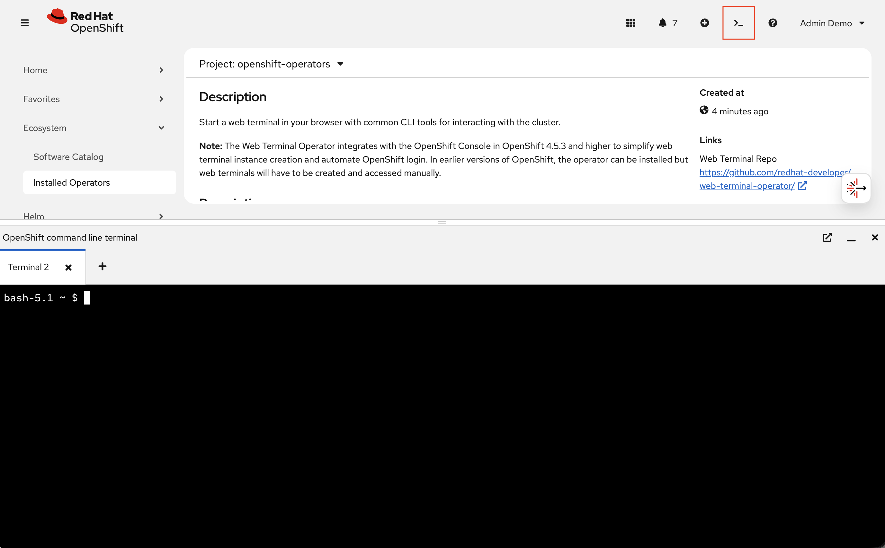
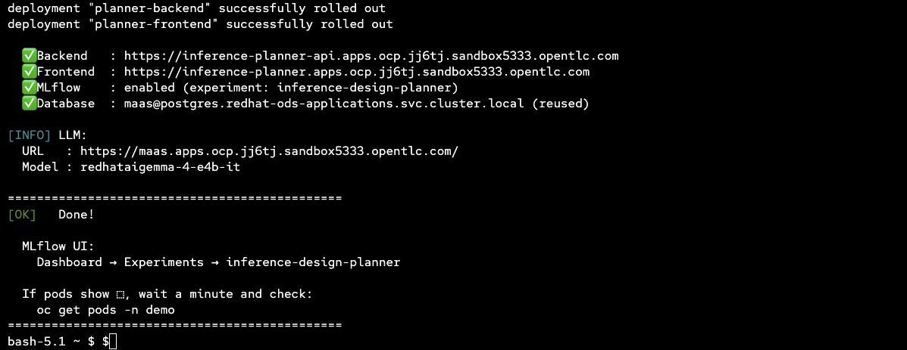
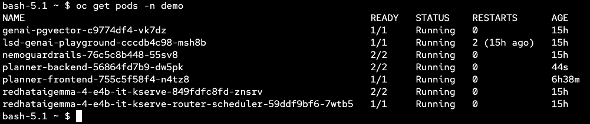
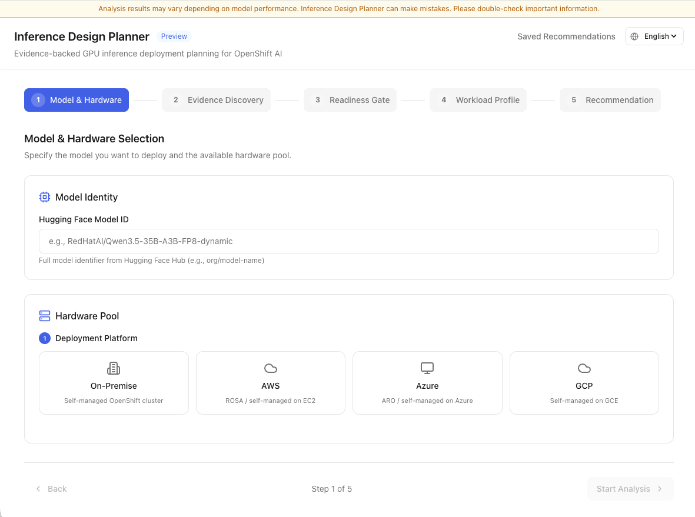
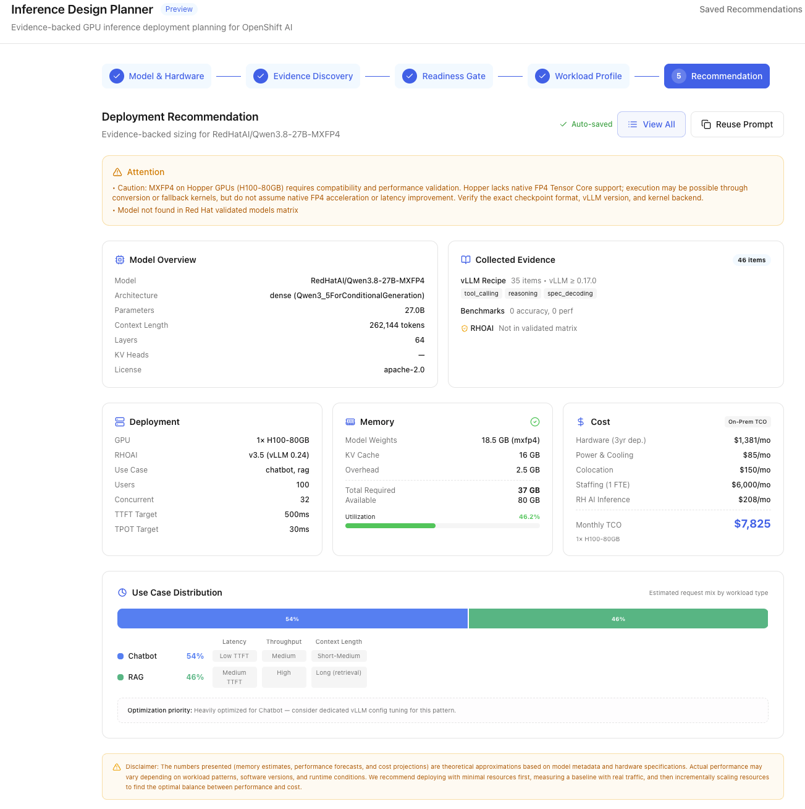
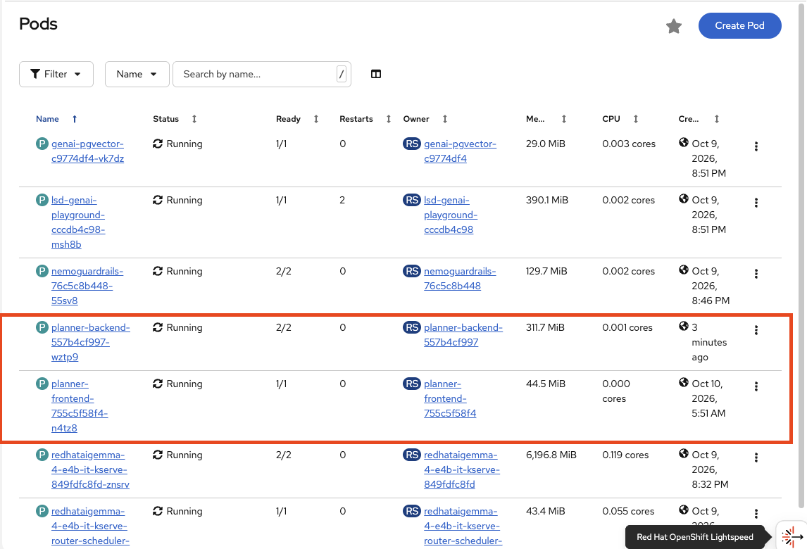
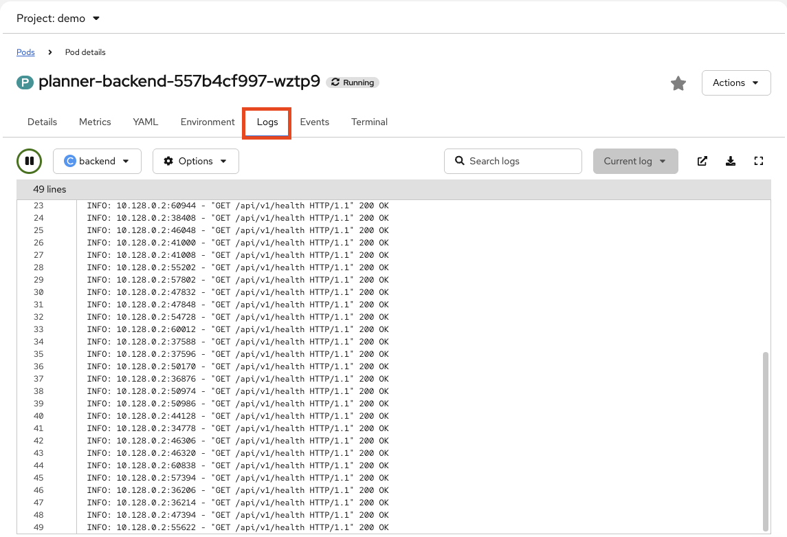
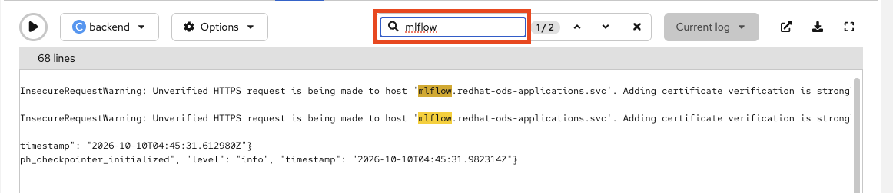

Deploy the Demo App and Explore Logs
In this module you will deploy the Inference Design Planner application into your cluster and then explore its application logs using LokiStack in the OpenShift Console.
The module has two parts:
-
Part 1 — Deploy the demo app (backend, frontend, database, and MLflow integration)
-
Part 2 — Explore application logs with LokiStack and LogQL
Part 1: Deploy the Demo App
The Inference Design Planner is a full-stack AI application consisting of:
| Component | Purpose |
|---|---|
planner-backend |
FastAPI service with LLM integration and MLflow tracing |
planner-frontend |
React-based web UI |
PostgreSQL |
Shared database (reused from |
MLflow |
Experiment tracking and trace collection (pre-deployed by setup scripts) |
Step 2.1: Open the Web Terminal
-
Access the OpenShift Console using the OpenShift Console tab (or via the grid icon in the top-right corner of the OpenShift AI dashboard).
-
Click the >_ icon in the top-right masthead of the OpenShift Console to open the Web Terminal.

This gives you an in-browser terminal with oc, git, and common CLI tools pre-installed.
Step 2.2: Set Environment Variables
The deployment script requires three parameters: the LLM base URL, an API key, and the model name. Your instructor will provide these values.
export LLM_BASE_URL="https://maas.apps.ocp.xxxxxxxxxxxxxx.opentlc.com"
export LLM_API_KEY="<MaaS subscription API key>"
export LLM_MODEL="publishers/demo/models/redhataigemma-4-e4b-it"|
Replace |
Step 2.3: Run the Deployment Script
The deployment script is fully self-contained — no git clone needed. It performs four steps automatically:
-
PostgreSQL — Verifies the existing PostgreSQL instance and creates the application database
-
Configuration — Creates ConfigMaps and Secrets with LLM and database connection details
-
Backend + Frontend — Deploys the application pods, services, and routes
-
Migration + RBAC — Runs database migrations and configures MLflow access
Run it with a single command:
curl -sL https://raw.githubusercontent.com/hyogrin/rhoai-basic-agentops-workshop/main/scripts/deploy_demo_app.sh \
| bash -s -- "$LLM_BASE_URL" "$LLM_API_KEY" "$LLM_MODEL"|
By default the script deploys into the |
Step 2.4: Verify the Deployment
Wait for the script to complete. You should see output similar to:
✅ Backend : https://inference-planner-api.apps.<cluster-domain>
✅ Frontend : https://inference-planner.apps.<cluster-domain>
✅ MLflow : enabled (experiment: inference-design-planner)
✅ Database : inference_planner@postgres.redhat-ods-applications.svc.cluster.local (reused)
Confirm all pods are running:
oc get pods -n demo
All pods should show Running with all containers ready (1/1 or 2/2). If any pod shows CrashLoopBackOff or Error, check the pod events:
oc describe pod <pod-name> -n demoStep 2.5: Access the Application
Open the frontend URL shown in the deployment output in your browser. You should see the Inference Design Planner landing page.

|
You can also retrieve the URL from the OpenShift Console under Networking > Routes in the |
Generate some traffic by interacting with the application — take a couple of steps to generate an inference design suggestion. This traffic will produce logs and traces that you will explore in the following exercises.

Part 2: Explore Container Logs in OpenShift Console
OpenShift provides a built-in log viewer that lets you inspect container output directly from the Console — no additional log aggregation stack required. Every container’s STDOUT and STDERR is captured automatically by the container runtime.
Why Logs Matter for AgentOps
For AI applications, logs reveal:
-
LLM request/response cycles — what the model received and returned
-
Tool call results — whether tools succeeded or failed
-
Error traces — stack traces, timeouts, and unexpected exceptions
-
MLflow trace IDs — correlation points between logs and traces (Module 3)
Step 2.6: View Pod Logs from the Console
-
In the OpenShift Console, navigate to Workloads > Pods.
-
Make sure the Project dropdown at the top is set to
demo. -
Click on the planner-backend pod.

-
Click the Logs tab.

You should see the backend application’s log output in real time. The log stream includes FastAPI startup messages, incoming request logs, LLM call details, and MLflow trace events.
Step 2.7: Filter Logs by Container
If a pod has multiple containers (sidecars, init containers), use the Container dropdown above the log viewer to select a specific container.
For the planner-backend pod, select the backend container to focus on the application logs.
Step 2.8: Search Within Logs
Use the Search bar at the top of the log viewer to filter for specific keywords:
-
Search
errororexceptionto find error events -
Search
mlflowto find trace-related log entries -
Search
tokenorinferenceto find LLM interaction logs

|
Click the ↓ button (bottom-right) to auto-scroll and follow the log stream in real time. Click Pause to freeze the output for inspection. |
Step 2.9: View Logs via the Terminal (Optional)
You can also view logs from the Web Terminal using oc logs:
Tail the live backend log stream:
oc logs -f deployment/planner-backend -n demoShow only the last 50 lines:
oc logs deployment/planner-backend -n demo --tail=50Filter for specific patterns with grep:
oc logs deployment/planner-backend -n demo --tail=200 | grep -i "error\|exception\|mlflow"Press Ctrl+C to stop following the log stream.
Module Summary
What you accomplished:
-
Deployed the Inference Design Planner with MLflow tracing using
deploy_demo_app.sh -
Verified the deployment (backend, frontend, database, MLflow)
-
Explored container logs using the OpenShift Console log viewer
-
Filtered and searched log output for errors, LLM interactions, and MLflow events
Key takeaways:
-
OpenShift captures all container STDOUT/STDERR automatically — no code changes required
-
The Console log viewer provides real-time streaming, container selection, and keyword search
-
oc logsgives you CLI-level access with grep and tail for deeper analysis -
Logs tell you what exactly happened and when — the foundation for debugging
Next steps:
In Module 3 you will explore MLflow tracing, which complements logs by showing the full execution path of each request — not just individual events, but the hierarchical flow from user question through agent reasoning, tool calls, and LLM invocations.